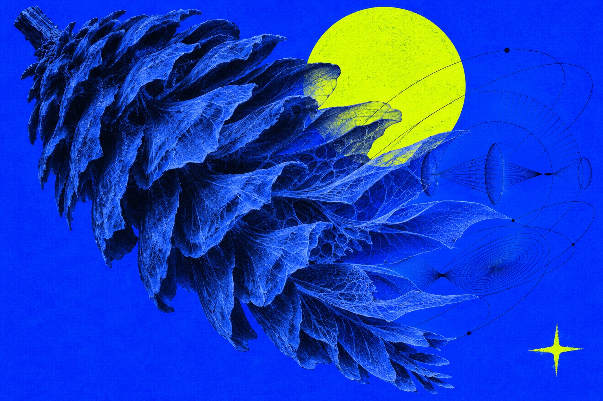

设计备忘录 / 作品特刊
新千年
设计备忘录.
Design Memos
for the Next Millennium
从身体的试探到一座城市的余温。沿着六个关键词，看设计怎样改变感知、环境和人与人相遇的条件。
翻开这期
设计备忘录 / 作品特刊
Design Memos
for the Next Millennium
从身体的试探到一座城市的余温。沿着六个关键词，看设计怎样改变感知、环境和人与人相遇的条件。
翻开这期